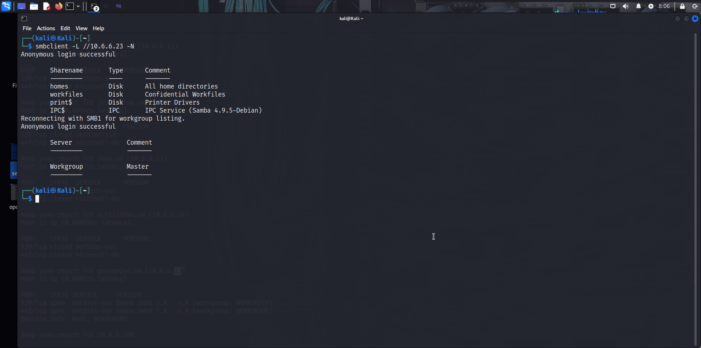
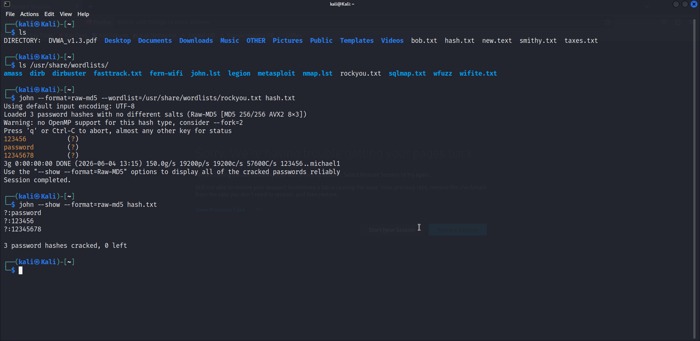

Project Overview
Conducted comprehensive penetration testing in controlled, authorized lab environments using industry-standard tools and methodologies. The work followed a structured attack lifecycle covering reconnaissance, enumeration, exploitation, and post-exploitation analysis, performed ethically and only on systems I owned or had explicit permission to test.
A key thread ran through the lab: SMB enumeration on Kali Linux to discover publicly accessible Samba shares, paired with password cracking using John the Ripper to demonstrate the real risk of weak credentials.
Key Responsibilities
- Performed SMB enumeration on Kali Linux to identify publicly accessible Samba shares.
- Cracked password hashes using John the Ripper in a controlled lab.
- Followed a structured penetration testing methodology across the attack lifecycle.
- Documented findings, attack paths, and remediation recommendations.
- Maintained strict ethical boundaries, testing only authorized targets.
- Correlated enumeration results with credential risk to show impact.
Findings & Techniques Demonstrated
- SMB Enumeration & Share Discovery
- Password Hash Cracking (John the Ripper)
- Reconnaissance & Target Scoping
- Exploitation in Controlled Labs
- Post-Exploitation Analysis
- Ethical Testing Boundaries
Tools & Technologies Used
Testing Activities
- Scoping the authorized lab environment
- Enumerating SMB services and listing exposed shares
- Extracting and cracking password hashes
- Recording each step for reproducibility
- Mapping findings to real-world credential risk
- Writing up remediation recommendations
Impact & Outcomes
- Identified exposed Samba shares that would leak data on a real network.
- Demonstrated how weak passwords fall to offline cracking.
- Built repeatable, ethical lab workflows for future assessments.
- Strengthened practical understanding of the full attack lifecycle.
Project Evidence


Skills Demonstrated
- SMB Enumeration
- Password Cracking & Hash Analysis
- Kali Linux
- Ethical Penetration Testing
- Reconnaissance
- Reporting & Remediation
Project Outcome
This project strengthened practical experience across the penetration testing lifecycle, from enumeration to exploitation, within authorized lab environments. It also enhanced the ability to translate attack findings into clear defensive recommendations, grounding security advice in hands-on evidence rather than theory.